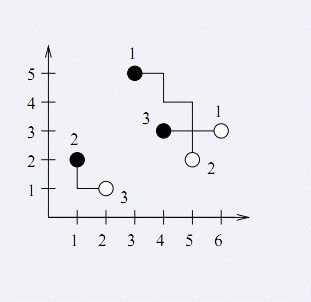

第一行为一个正整数n(2<=n<=50000)，表示天然气井的数量（中转站的数量与之相等）。接下来n行，每行两
个整数xi和yi（0<=xi,yi<=100000），表示天然气井的坐标。向东走则x坐标增加，向北走则y坐标增加。接下来n
行，每行两个数xj'和yj'（0<=xj',yj'<=100000），表示中转站的坐标。
Mary试图控制成都的天然气市场。专家已经标示出了最好的天然气井和中转站在成都的地图。现在需要将中转
站和天然气井连接起来。每个中转站必须被连接到正好一个钻油井，反之亦然。 Mary特别指名，建设的天然气管
道必须从某个天然气井开始，向南或者向东建设。Mary想知道怎么连接每个天然气井和中转站，使得需要的天然气
管道的总长度最小。
第一行为一个正整数n(2<=n<=50000)，表示天然气井的数量（中转站的数量与之相等）。接下来n行，每行两
个整数xi和yi（0<=xi,yi<=100000），表示天然气井的坐标。向东走则x坐标增加，向北走则y坐标增加。接下来n
行，每行两个数xj'和yj'（0<=xj',yj'<=100000），表示中转站的坐标。
第一行包含一个数，表示最短的连接管道长度。
3
3 5
1 2
4 3
6 3
5 2
2 1
9